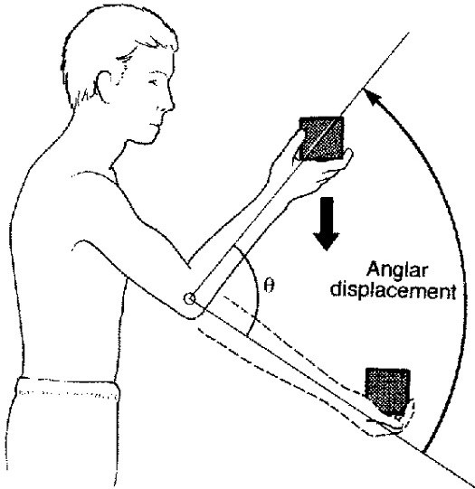
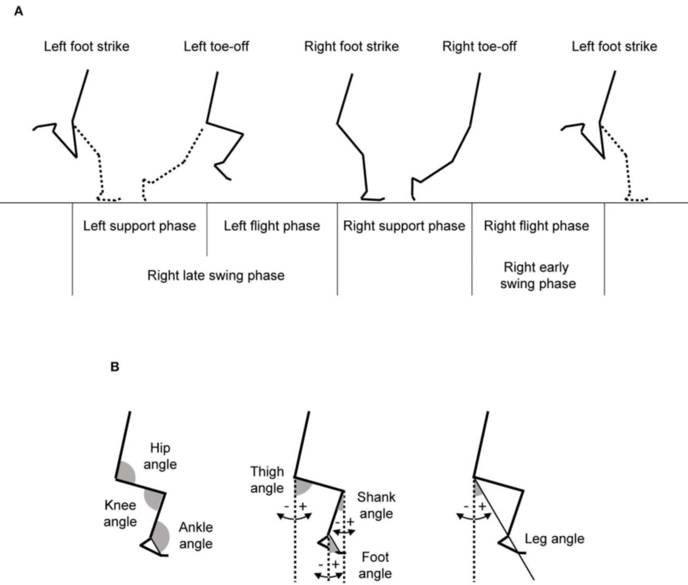
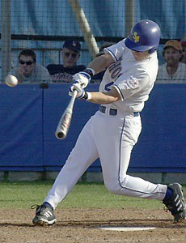
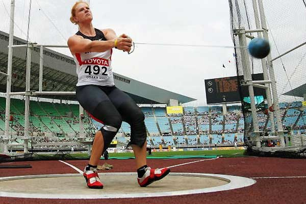
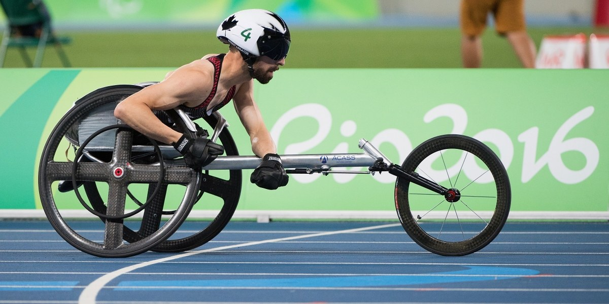
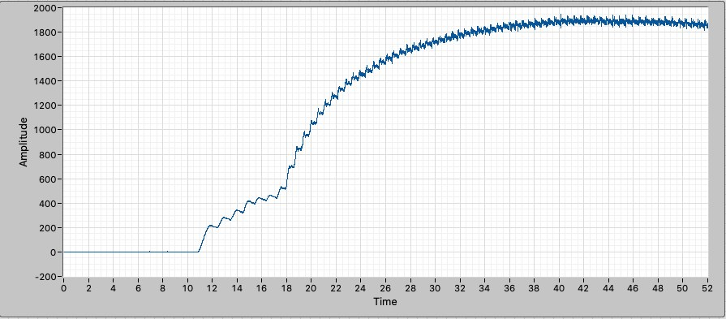
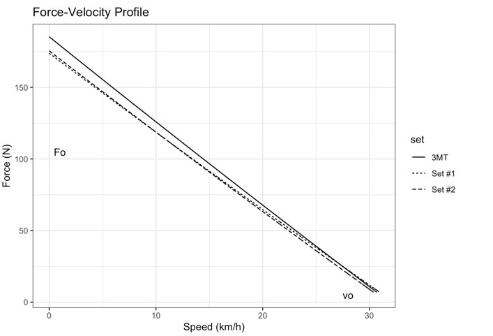
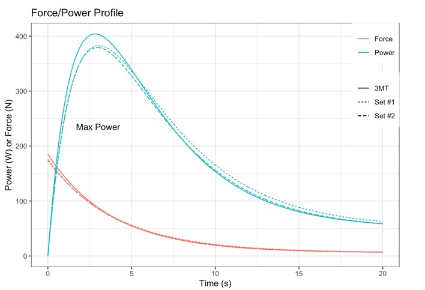

Distinguish absolute from relative angles, and distance from displacement
Convert between degrees, radians and revolutions
Define angular displacement, velocity and acceleration, with their units
Relate angular to linear quantities through the radius: l = rθ, vt = rω, at = αr
Calculate radial and total linear acceleration
Explain how a gyroscope measures angular velocity, and convert its output to a speed
What angular kinematics is
Motion about an axis, without asking what caused it
The study of motion of an object about a circular path, exclusive of
the influences of mass and force
It includes angular displacement, angular velocity
and angular acceleration
Angular motion occurs when all points on an object move in a circular path
around the same axis
"Kinematics" means we describe the motion and say nothing about
what produced it. Forces and moments arrive in Angular Kinetics; this lecture is
geometry and clocks.

Part 01
Angular displacement
Angles, radians, and the link to distance travelled
Angular displacement
The angle moved through, from a starting position
θ = angle2 − angle1
Defined relative to an axis of rotation
Theta (θ) represents angular displacement
A vector: it has magnitude and direction
SI unit: the radian
Absolute and relative angular position
Measured against what?
ABSOLUTE ANGLES
Measured from an external frame of reference — one that does not move
Usually from the vertical or the horizontal
Describes the orientation of a segment in space
RELATIVE ANGLES
The angle formed between two limb segments
Measured against a line that is itself capable of moving
By convention, in the anatomical position all relative joint angles are
0°
A joint angle is relative. A segment angle is absolute. Reporting
one when you mean the other is the most common error in a gait report.
Absolute and relative angles
Move the thigh and watch which numbers change
Elevation angles and the nervous system
Absolute angles are not just a measurement convention
An elevation angle is an absolute angle measured from the
vertical — one for the thigh, one for the shank, one for the foot
It has been suggested that the central nervous system coordinates the
orientation of the segments, not the individual joints
That is a different control problem: three segment angles in space rather than
three joint angles against each other
And it turns out the three do not move independently
If the nervous system controlled each joint separately,
the three elevation angles could in principle take any combination. They do not.
θthigh hip → knee
θshank knee → ankle
θfoot heel → toe
All three measured from the vertical, positive when the distal end leads
The planar covariation law
Three angles, two degrees of freedom
Plot the three elevation angles against each other in 3D over a gait
cycle and you get a loop
That loop does not fill the space — it lies, very nearly, on a
plane
So the three angles are not independent: fix two and the third follows
The changes in segment orientation over the cycle are
tightly coordinated, not separately controlled
“Temporal changes in lower-limb segment angles
during walking covary in such a way that the trajectory lies close to a plane.”
Why it matters — three joints' worth of coordination reduced to
two numbers is a large saving for whatever is doing the controlling
The orientation of the plane changes with speed and condition;
the planarity itself does not
It is measurable in any gait lab, on any subject, from marker data you already have
The planar covariation law
A measured stride — turn the loop and see the plane
Robust across conditions
Same law, different plane
WHAT HOLDS
Planarity is seen across walking and running
Across a wide range of speeds
On inclines, in children and older adults,
and with prosthetic limbs
WHAT CHANGES
The orientation of the plane
The shape and size of the loop on it
Both shift systematically with speed
WHY YOU CARE
A measure of coordination, not just range of motion
Plane orientation has been used as a marker of
gait quality and of change after injury
It needs nothing but segment angles
The nervous system appears to coordinate the segments as a
synergy rather than controlling each one separately — which is why
the loop stays flat while everything about its shape changes.
Angular distance and angular displacement
The same scalar-and-vector pairing as in linear kinematics
Angular distance φ
Angular displacement θ
What it is
Length of the angular pathway, start to finish
Angle between the initial and final positions
Type
Scalar — magnitude only
Vector — magnitude and direction
SI unit
radians
radians
Equation
no simple equation
θ = angle2 − angle1
A gymnast who completes a full backward giant has turned through an
angular distance of 2π but an angular displacement of
zero — they finish where they started.
Units of angular measurement
Three in common use, and only one of them works in equations
Revolution
Angular motion that proceeds in one direction and returns to the start
Degree
One revolution contains 360 degrees
Radian
The ratio of the length of an arc to the length of the radii that enclose it
Every equation in this lecture needs radians.
Degrees are for reporting; revolutions are for counting; radians are for calculating.
What is a radian?
The angle subtended by an arc one radius long
θ = l / r
1 rad: the angle at the centre of a circle subtended by an arc equal in
length to the radius
1 rad ≈ 57.3°
A whole revolution is the circumference over the radius, 2πr / r = 2π
Because it is a ratio of two lengths, a radian has no units
What is a radian?
Lay the radius along the rim and count how many fit
Converting degrees to radians
One relationship, used in both directions
? radians = degrees × π radians180 degrees
Multiply the number of degrees by π and divide by 180.
Example: what is 45° in radians?
45 × π / 180
= 0.785 radians
1 rad
360° / 2π = 57.3°
π/2 rad
90°
π rad
180°
2π rad
360°
1°
2π / 360 rad
Direction conventions
Angular quantities are vectors, so they need a sign
Angular displacement, velocity and acceleration are all vector
quantities — magnitude and direction
The direction is either positive or negative, set by
the right hand rule
Counterclockwise is positive
Clockwise is negative
Curl the fingers of your right hand the way the object is
turning; your thumb points along the vector. For motion in the plane of the page that
thumb points out of the page for positive, into it for negative.
Angular kinematics of maximal sprinting
Seventy-nine sprinters, 60 m, flat out
79 male sprinters ran a maximal-effort 60 m
Leg angular kinematics were the dependent variables
Predictors: running speed, leg length,
step frequency, and the swing / support ratio
Note which angles they chose: thigh, shank, foot and leg angles —
absolute — alongside hip, knee and ankle — relative
The same absolute-versus-relative distinction from the start
of the lecture, doing real work in a real study.

Miyashiro, Nagahara, Yamamoto & Nishijima (2019),
Front. Sports Act. Living 1:37 · CC BY
What changes when you run faster
And what changes when your legs are longer
AS RUNNING SPEED INCREASES
Thigh angle at contralateral foot strike increases — the swing leg
is further forward when the other foot lands
Knee extension range during support decreases
Backward swing angular velocities become more negative
AS LEG LENGTH INCREASES(at the same speed)
Greater thigh angle at contralateral foot strike
Changes in support-phase knee extension displacement
Faster sprinting is not a bigger version of slower sprinting.
The support leg extends less, not more — it gets
stiffer, and the speed comes from turning the limb over faster.
Predicted sprint kinematics
Move the two predictors and watch both angles
Angular and linear displacement
The angle is shared; the distance is not
The angular displacement of all points along a rotating object is the
same θ, however large the radius
But the linear path each point takes depends on how far it is from the
axis
A point twice as far out travels twice as far
l = rθ
l is the curvilinear distance (m), r the radius of
rotation (m), θ the angular displacement in radians

The hands and the bat tip share θ — not l
Angular and linear displacement
One angle, two points, two distances
Angular displacement
Example Problem
What is the linear displacement of a point on a bicycle wheel
(radius = 34 cm) if the wheel rotates 30°?
Given:
r = 0.34 m
θ = 30°
Angular displacement
Solution
First, convert the angle to radians
θ = 30 × π / 180
θ = 0.52 rad
Then convert angular displacement to linear displacement
l = rθ
l = (0.34 m)(0.52 rad)
l = 0.1768 m
Part 02
Angular velocity
How fast the angle changes — and what that means at the rim
Angular speed and angular velocity
Again, a scalar and a vector
Angular speed σ
Angular velocity ω
What it is
Angular distance covered, divided by the time taken
Angular displacement occurring in a given time
Type
Scalar
Vector
Equation
σ = Δφ / Δt
ω = Δθ / Δt
SI unit
rad/s
rad/s
Tangential velocity
The linear velocity of a point travelling an angular path
vt = rω
vt in m/s, r in m, ω in rad/s
For a given ω, linear velocities differ with distance from the axis
The angular velocities of the hands and the bat tip are the same;
their linear velocities are not
Although it results from angular motion, tangential velocity is a form of
linear velocity
Its direction is a straight line tangent to the circular path
vt is always perpendicular to r
Tangential velocity
Same ω everywhere — press play and watch the two arrows
Angular velocity
Example Problem
What is the linear velocity of a point on a bicycle wheel
(radius = 34 cm) if the wheel rotates 30° in 0.2 s?
Given:
r = 0.34 m
θ = 30°
Δt = 0.2 s
Angular velocity
Solution
Convert to radians
θ = 30 × π / 180
θ = 0.52 rad
Solve for angular velocity
ω = Δθ / Δt
ω = (0.52 − 0) / 0.2
ω = 2.6 rad/s
Convert angular to tangential velocity
vt = ωr
vt = (2.6 rad/s)(0.34 m)
vt = 0.884 m/s
0.884 m/s is about 3 km/h, which is a very slow wheel — 30° in a
fifth of a second is barely moving. The arithmetic is worth sanity-checking against
something physical.
The hammer throw
vt = rω, with only two things to change
The ball travels a circle, so its speed at release is the
tangential speed, vt = rω
Once it leaves, it is a projectile — the range depends on that speed
squared
So the thrower has exactly two levers:
increase ω across successive turns
keep the hammer at a large effective radius
The second is why throwers fight to keep the arms long and the shoulders back
as the turns speed up
vt = rω

The release speed is tangential — the throw leaves along a straight line
The hammer throw
Set ω and r, then release
Part 03
Angular acceleration
Speeding up, slowing down — and simply turning
Angular acceleration
The rate of change of angular velocity
α = Δω / Δt
Represented by the Greek letter alpha, α
The change in angular velocity occurring over a given period of time
A vector quantity
SI unit: rad/s²
at = αr
The component of linear acceleration
tangent to the circular path is the tangential acceleration
Notice that r is the common factor in all three:
l = rθ, vt = rω, at = rα. Changing the radius changes every linear
quantity in the same proportion.
Angular acceleration
Example Problem, and solution
What is the tangential acceleration of a point on a bicycle wheel
(radius = 34 cm) if the wheel's angular velocity changes from 0 to 2.6 rad/s in 0.2 s?
First solve for the angular acceleration
α = Δω / Δt
α = (2.6 − 0) / 0.2
α = 13 rad/s²
Then convert to tangential acceleration
at = αr
at = (13 rad/s²)(0.34 m)
at = 4.42 m/s²
Exactly the same shape as the velocity problem: divide by time
to get the angular quantity, multiply by r to get the linear one.
The bicycle wheel, all the way through
Every step is either × r or ÷ Δt
Centripetal acceleration
Turning is accelerating, even at constant speed
If something is travelling round a circle then an external force or acceleration is
required to change its direction — Newton's first law
That acceleration is centripetal, meaning centre-seeking
The force producing it points toward the centre
It is also called radial acceleration
ar = ω²r
To keep an object at angular velocity ω on a circle
of radius r, an inward acceleration of ar is required
The wire supplies the centre-seeking force
Centripetal acceleration
Press play — then cut the wire
Total linear acceleration
Two perpendicular components, one resultant
When an object rotates there are two linear accelerations acting:
at, tangential — because it is speeding up or slowing down
ar, radial — because it is turning
Both are linear accelerations, even though both arise from angular motion
They are perpendicular, so they combine by Pythagoras
atotal² = ar² + at²
Total linear acceleration
Change ω and α separately, and watch which one matters
Total acceleration
Example Problem
During the hammer throw an athlete changes the angular velocity of the hammer
(1.2 m radius) from 0 to 12 rad/s in 1.5 seconds.
What is the total acceleration of the hammer?
Given:
t = 1.5 s
r = 1.2 m
ωi = 0 rad/s
ωf = 12 rad/s
To get the total we need both the tangential and
the radial accelerations, so this is three calculations and then a Pythagoras.
Total acceleration
Solution
Angular acceleration
α = Δω / t = (12 − 0) / 1.5
α = 8 rad/s²
Tangential acceleration
at = αr = (8)(1.2)
at = 9.6 m/s²
Radial acceleration
ar = ω²r = (12)²(1.2)
ar = 172.8 m/s²
Total, by vector composition
atotal = √(9.6² + 172.8²)
atotal ≈ 173 m/s²
173 m/s² is about 17.6 g. On a 7.26 kg hammer that
is roughly 1260 N through the wire and the thrower's arms — which is why the
event looks the way it does.
Summary of concepts and equations
Three angular quantities, three linear partners, one radius
Angular
Unit
Linear partner
Unit
Displacement
θ = angle₂ − angle₁
rad
l = rθ
m
Velocity
ω = Δθ / Δt
rad/s
vt = rω
m/s
Acceleration
α = Δω / Δt
rad/s²
at = rα
m/s²
Turning
—
ar = ω²r
m/s²
Resultant
—
atotal = √(ar² + at²)
m/s²
Read the table across: every row is "divide by time to go down the
angular column, multiply by r to cross to the linear one". The only row without an angular
partner is radial acceleration, because turning has no angular equivalent — it is what
angular motion does to a linear path.
Part 04
Measuring angular motion
Gyroscopes, the Coriolis effect, and a racing wheelchair
The Coriolis effect
How a sensor with no moving parts detects rotation
When a mass m moves with velocity v and an external
angular rate Ω is applied…
…the Coriolis effect generates a force that pushes the mass
perpendicular to its motion
The size of that displacement is directly related to the angular rate
So measuring the sideways push measures the rotation
FCoriolis = −2mΩ × v
Move across a turning platform and something pushes you sideways —
perpendicular to both Ω and v
Inside a MEMS gyroscope
Four masses, kept permanently vibrating
A proof mass in four parts (M1–M4) is held in continuous oscillation,
moving inward and outward in the horizontal plane
Rotate the structure and the Coriolis force changes that vibration
Two masses oscillating in opposite directions get pushed in opposite directions, so they
move apart
That changes the capacitance between them — the system's ability to
store charge — and the change is converted to a voltage
M1 and M3 on one axis, M2 and M4 on the other — all four driven together
Three axes, three modes
Roll, pitch and yaw come from which masses move
Roll
Angular rate along X. M1 and M3 move up and down out
of the plane
Pitch
Angular rate along Y. M2 and M4 move up and down out
of the plane
Yaw
Angular rate along Z. M2 and M4 move horizontally in
opposite directions
Whenever the Coriolis effect is detected, the constant motion of the driving
mass causes a change in capacitance (∆C) that the sensing structure converts into a
voltage signal.
aCoriolis = −2 Ω × v
The pair that responds is always the pair whose
drive velocity runs across the rotation axis. Everything in the table
is that cross product, worked out three times.
The next slide does it live — pick an axis and watch
Roll, pitch and yaw inside the chip
Turn it and watch which pair gets pushed
A wheel-mounted sensor
Wheelchair racing metrics from an IMU on the wheel


The gyroscope reports the wheel's angular velocity, in degrees per second
The trace shows a start, a build, a plateau at top speed, and the slowing at the end
Every push is visible as a step in the rise
Nothing here is a speed yet — turning it into one needs the radius
From degrees per second to km/h
Three conversions, and the middle one is this lecture
deg/s → rad/s
× π / 180
Because every equation needs radians
rad/s → m/s
vt = rω
The wheel is 66 cm across, so r = 0.33 m
m/s → km/h
× 3600 / 1000
That is just × 3.6
Only the middle step needs anything you did not already know. The
sensor never measures speed — it measures turning, and the radius is what
turns one into the other.
The conversion chain
Move the sensor reading and watch it propagate
The measured trace
Scrub the cursor and run the chain on real data
What you can get from it
Velocity over time is the raw material for everything else


Differentiate the velocity and you have acceleration, and with mass, force
Plot force against velocity across a sprint and you recover a
force–velocity profile — F0 and v0 for the athlete
in their chair
Force times velocity gives power, peaking at an intermediate speed
Push-by-push metrics — frequency, contact time, impulse per push — come from the same trace
A force–velocity profile from one sprint
Fit the rise, differentiate it, multiply by mass
Summary
ANGLES
Absolute angles are measured from a fixed reference, relative angles between
two segments. Distance φ is a scalar, displacement θ a vector. Calculations use
radians, where θ = l/r.
RATES
ω = Δθ/Δt and α = Δω/Δt. Every angular quantity has a linear partner through
the radius: l = rθ, vt = rω, at = rα.
TURNING
Circular motion needs a centre-seeking acceleration ar = ω²r, even
at constant speed. With at it gives the total linear acceleration by Pythagoras.
If you remember one thing: the angle is shared, the distance
is not. Every point on a rotating body turns through the same θ, and the radius
decides what that means in metres, metres per second, and metres per second squared.
EPHE 341 · Biomechanics
Questions?
Next up: general kinematics · Further reading: McGinnis Chpt 6, pg 147–158